Der Display Manager ist aktiviert.
Bedienelement | Funktion |
|---|
| | Menü Tippen Sie das Menü an, um die gewünschte Anordnung der Anzeige-Bereiche zu wählen. |
 | 3-Anzeige-Bereiche |
| 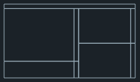 | 4-Anzeige-Bereiche SINUMERIK Operate (mit Funktionsblock) Widget-Bereich Applikationen-Bereich (PDF, Virtuelle Tastatur) Bereich mit virtueller Tastatur
|
| 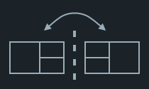 | Anzeige-Bereiche spiegeln Spiegelt die gewählte Anordnung der Anzeige-Bereiche. |
| 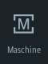 | Navigieren in SINUMERIK Operate Tippen Sie auf das entsprechende Symbol, um direkt den gewünschten Bedienbereich zu öffnen. |
... |
| 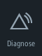 |
 | Widgets Folgende Widgets stehen standardmäßig zur Verfügung: Istwerte Nullpunkt Werkzeug Achslast Alarme Programmlaufzeit Standzeit NC/PLC-Variablen
|
| 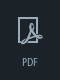 | PDF Öffnet das hier hinterlegte PDF. Folgende Funktionen sind in der PDF-Anzeige verfügbar: In der PDF-Anzeige werden die Pinch-Zoom-Funktion und die Fingergesten unterstützt. Alternativ bedienen Sie die PDF-Anzeige über die animierte Symbolleiste. Im Vollbildmodus sind folgende Symbole verfügbar:  Dokument öffnen Dokument öffnen
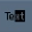 Text im Dokument markieren 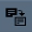 Inhalt kopieren 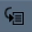 Zur eingegebenen Seite wechseln Nach Inhalten suchen Darstellung um 90 Grad nach links drehen  Darstellung um 90 Grad nach rechts drehen Darstellung um 90 Grad nach rechts drehen
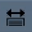 Darstellung auf Fensterbreite anpassen 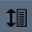 Darstellung auf Fensterhöhe anpassen Darstellung vergrößern Darstellung verkleinern Lesezeichen einblenden und ausblenden
Mit den folgenden Fingergesten optimieren Sie die Leseansicht: Wenn Sie beim Betrachten eines PDF-Dokuments die Sprache wechseln, wird das PDF-Dokument in der jeweiligen Sprache nachgeladen. Wenn für die eingestellte Sprache kein PDF-Dokument verfügbar ist, wird das englische PDF-Dokument angezeigt. Die Position im PDF-Dokument bleibt nach dem Sprachenwechsel sitzungsübergreifend erhalten, wenn das PDF-Dokument Lesezeichnen enthält. |
| 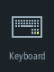 | | 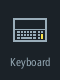 | Virtuelle Tastatur Blendet im Anzeige-Bereich für Applikationen sowie in dem 4. Anzeige-Bereich unterhalb des SINUMERIK Operate eine QWERTY-Tastatur ein. Wählen Sie die virtuelle Tastatur bei maximierter Darstellung eines Anzeige-Bereichs, dann öffnet sich die Tastatur als Popup. Die Tastatur lässt sich mittels Touch-Bedienung beliebig auf dem Display verschieben. |
| 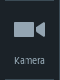 | Kamera Live-Streaming der konfigurierten Kamera: Wenn eine Kamera konfiguriert ist, können Sie den jeweiligen Streaming-Vorgang direkt ansehen. Wenn die Kamerakonfiguration geändert wird oder ein Konnektivitätsproblem auftritt, booten Sie das System neu, um den Streaming-Vorgang an der Kamera zu aktivieren. |
| 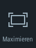 | Anzeige-Bereich maximieren Vergrößert den Bereich mit dem SINUMERIK Operate sowie den Bereich für die Applikationen auf die volle Ausdehnung des Panels. |
| 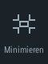 | Anzeige-Bereich minimieren Der Bereich mit dem SINUMERIK Operate sowie der Bereich für die Applikationen werden wieder auf die ursprüngliche Ausdehnung verkleinert. |
| 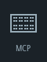 | Maschinensteuertafel Blendet eine Maschinensteuertafel ein. Hinweis:
Beachten Sie hierzu die Angaben des Maschinenherstellers. |